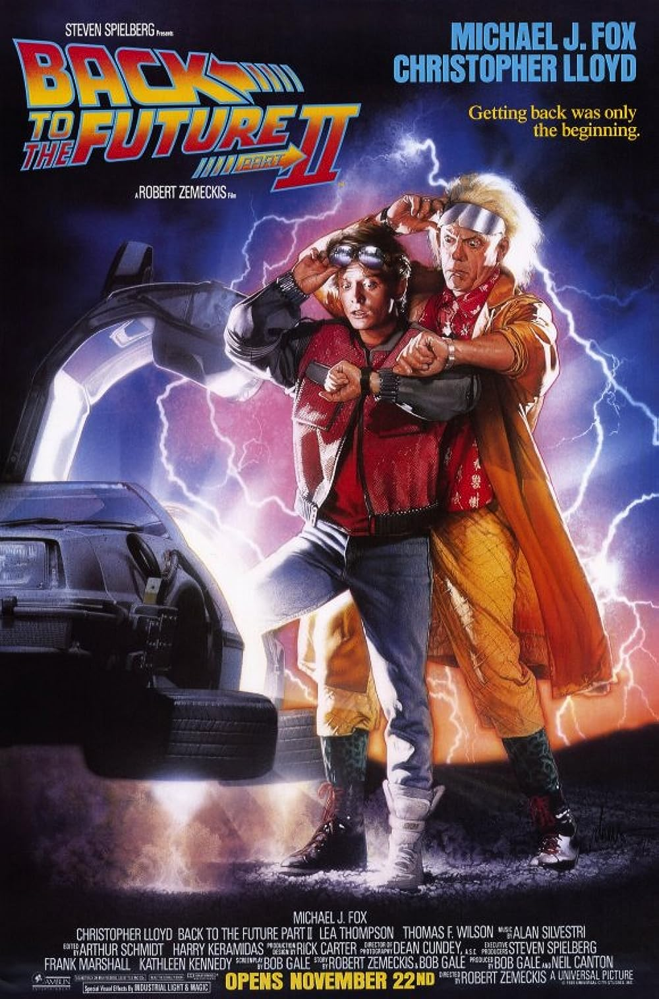

De volta para o Futuro
Disponivel em varias plataformas
Sinopse

O adolescente Marty McFly é transportado para 1955 quando uma experiência do excêntrico cientista Doc Brown dá errado. Ele viaja pelo tempo em um carro modificado e acaba conhecendo seus pais ainda jovens. O problema é que Marty pode deixar de existir porque ele interferiu na rotina dos pais, que correm o risco de não se apaixonar mais. Para complicar ainda mais a situação, Marty precisa voltar para casa a tempo de salvar o cientista.
foi lançado em 25 de dezembro de 1985
93% gostaram do filme

arrecadou um total de US$ 381.109.762
Elenco
Michael J Fox
Marty McFly
Christopher Lloyd
Emmett Brown
Lea Thompson
Lorraine Baines McFly
Crispin Glover
George McFly

Thomas F. Wilson
Biff Tannen
Claudia Wells
Jennifer Parker